Everything about money sits under one sidebar entry, Billing. Its left-hand navigation is ordered the way the month flows.
| Section | What it is for |
|---|---|
| Needs attention | Everything a person should look at, from every check, in one list: unmatched provider accounts, unmapped services, duplicates, count differences, quantity changes to approve, supplier cost changes, stale data, drafts, invoices changed in Xero, supplier bills and renewals. Filter by group or customer; every row opens where it is dealt with. |
| Customers | One row per customer: agreements, next invoice, charge per month, supplier cost, margin, how many lines the integrations supply, and whether anything needs attention. |
| Monthly run | Three steps as tabs: Prepare (what is due and what changed), Approve (drafts to Xero), Issued (created in Xero, and anything changed in Xero afterwards). |
| Services | The service register: every subscription, hosting item and device the integrations report, with the supplier product, quantity, cost, last sync and the line that bills it. |
| Renewals & pricing | The renewal queue with supplier commitment exposure, and the price review tool. |
| Invoices | The Xero sales mirror (outstanding, overdue, paid) and the Pax8 supplier bill reconciliation. |
| Automation | The staged automation policy in Settings. |
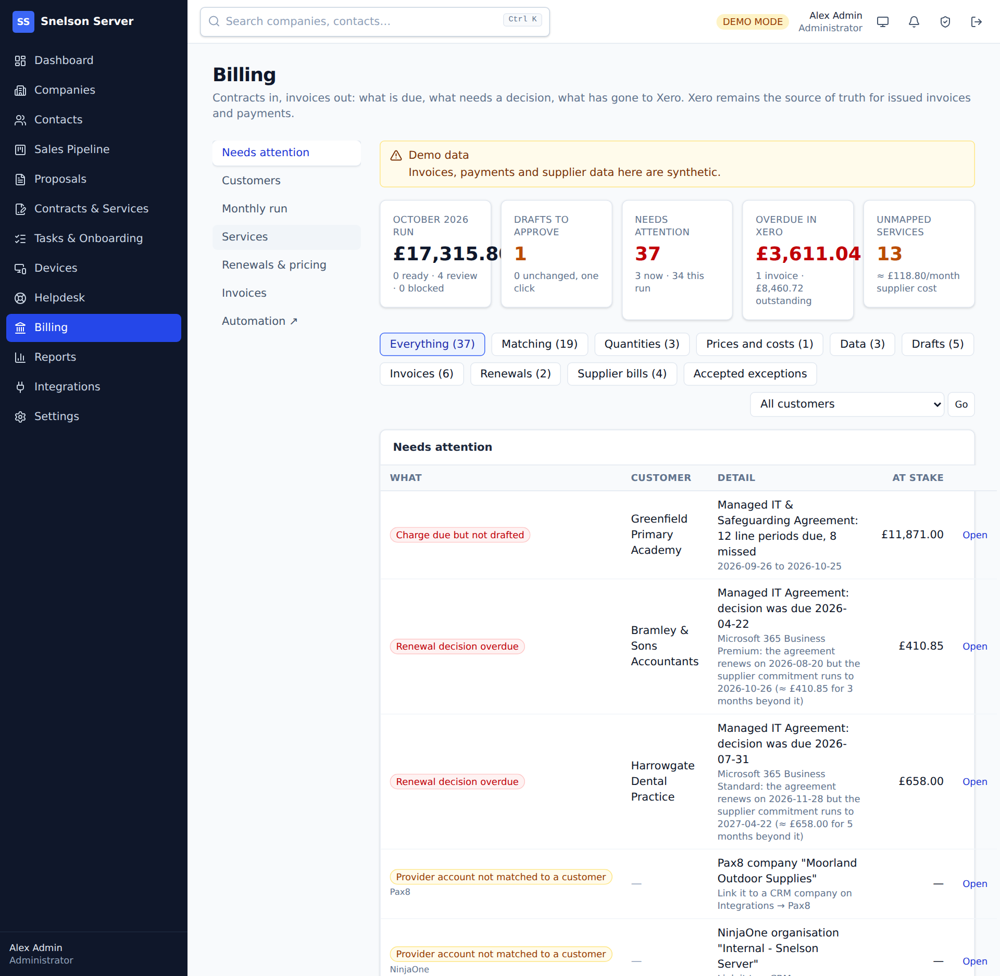
A draft can be prepared without the link but cannot be approved. Go to Integrations → Xero → Mapping, or follow the red "Link this customer to its Xero contact" action on the company's Billing tab. The link is one to one: a Xero contact can belong to only one CRM company.
On the contract (Contracts & Services → the agreement → Edit):
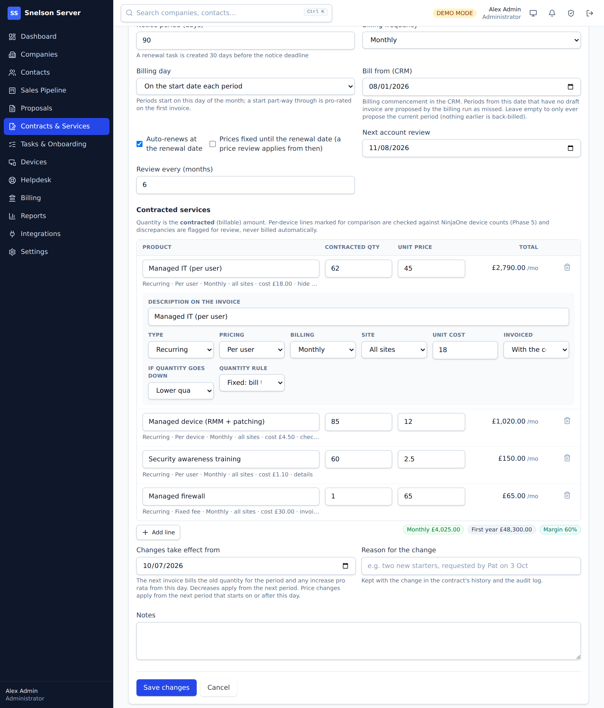
| Setting | Meaning |
|---|---|
| Invoice schedule: With the contract (default) | The line's price is spread over the contract's invoices. An annual £120 domain on a monthly contract bills £10 a month. |
| Invoice schedule: On its own cycle | The line is invoiced once per its own period, anchored like the contract. A domain renewed yearly is billed once a year, in full. |
| Reduction policy: Next period (default) | A lower quantity applies from the next period; nothing is credited inside the current one. |
| Reduction policy: Immediate | The unused days are credited as a negative line (and as a catch-up if the period was already invoiced). |
| Reduction policy: At renewal | The old quantity is billed until the contract's renewal date. |
| Quantity rule: Fixed (default) | The agreed quantity bills. If Pax8, 20i or NinjaOne supply a different count, that is an exception for a person to decide (amend, reduce at renewal, bundle, accept, dismiss). |
| Quantity rule: Synced | The integrations' count is what should be billed. A different count is a quantity change to approve; one approval records it as a dated change from the day it changed, and the next invoice pro-rates it. Nothing changes until approved. |
On the company's Billing tab, each agreement line shows Supplied by: which integration supplies it and how many. Services the integrations report that no line accounts for are listed below the agreements under Supplied but not on an active agreement, unmapped ones first. For each, pick the line in Billed on, or use Not charged? to record that it is bundled into another line, covered by a commitment, intentionally free (with a review date) or internal.
Matching by rule happens at sync time and is recorded, so you can see how a service came to be on a line: chosen by a person, matched by catalogue SKU, matched by product name, or the per-device rule (lines marked "compare with NinjaOne" take the billable device count). A person's choice is never overwritten by a sync.
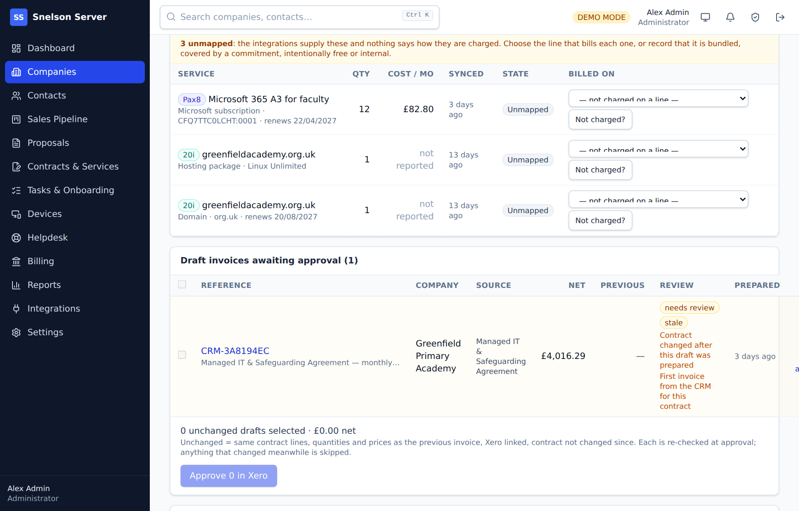
Billing → Monthly run → Prepare. Pick a run date (today by default). The summary line says how many contracts are ready, need review or are blocked, the expected billing total, potential missed revenue across unmapped services, and renewals and notice deadlines this week.
Each row shows the customer and agreement, the period, the proposed net, the previous comparable draft (linked), the difference, and a status:
Open the why toggle on a row to see the reasons. They are read from the calculated lines against the previous draft, never guessed: "Users: 10 → 12", "price £40.00 → £42.00 per unit", "2 added from 14 Oct, pro rata (£10.92)", "Includes 2 missed periods".
Leave One draft per customer ticked to get a single consolidated draft when several agreements of the same customer are due. Click Prepare drafts.
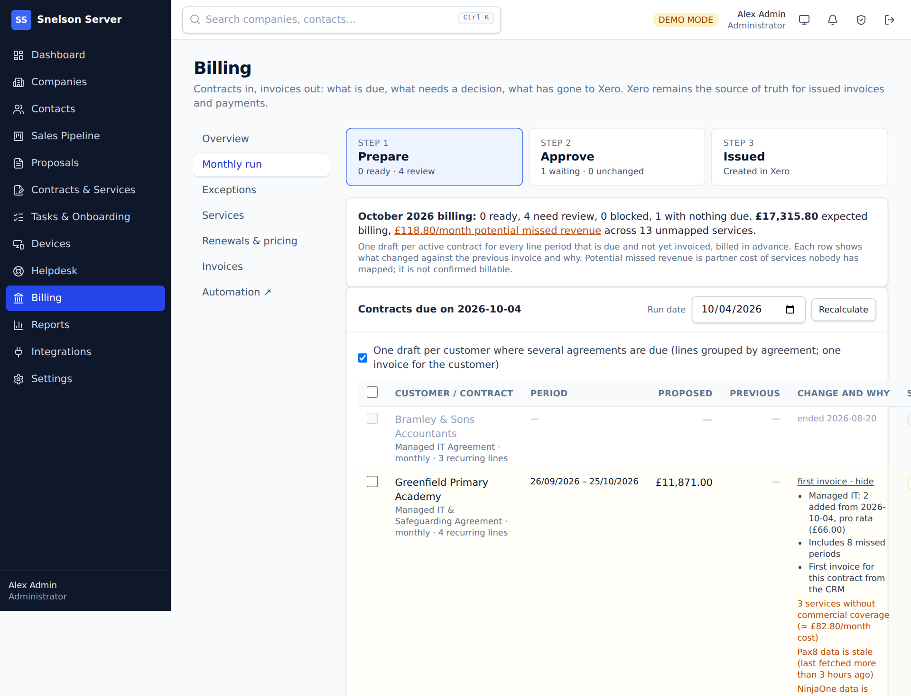
Billing → Monthly run → Approve lists every draft awaiting approval with its verdict:
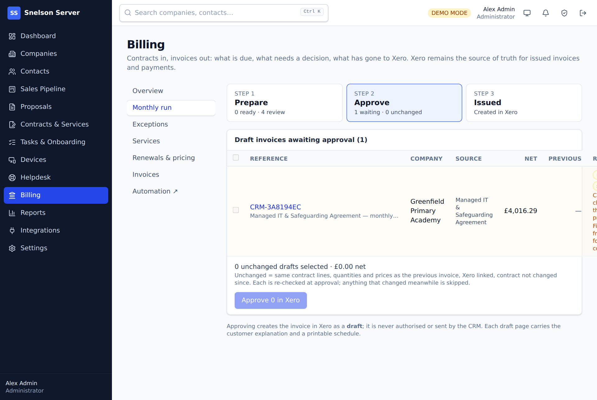
Billing → Monthly run → Issued lists what was created in Xero, with the Xero invoice number and a link to each customer schedule. If an invoice is changed, voided or deleted in Xero after approval, it appears at the top against the approved version. From here on, approve and send from Xero; payments come back through the hourly sync and webhooks.
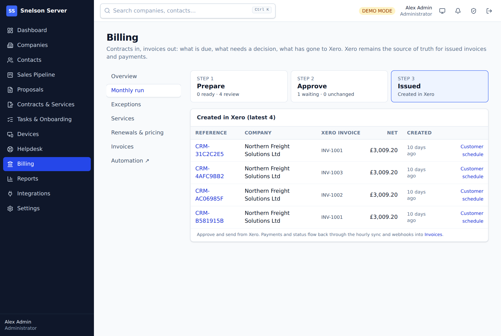
A draft page has the lines (editable until approval), What the customer sees (one paragraph derived from the calculated lines), How these amounts were calculated (one explanation per line: the quantity on the first day, each addition for its remaining days, credits, catch-ups), the details (dates, period, PO reference, Xero contact) and the approval controls.
If the contract changed after the draft was prepared, a stale notice lists the changes since and offers Re-prepare from the contract: the old draft is cancelled, its periods and changes are handed back, and a fresh draft is prepared for the same stretch.
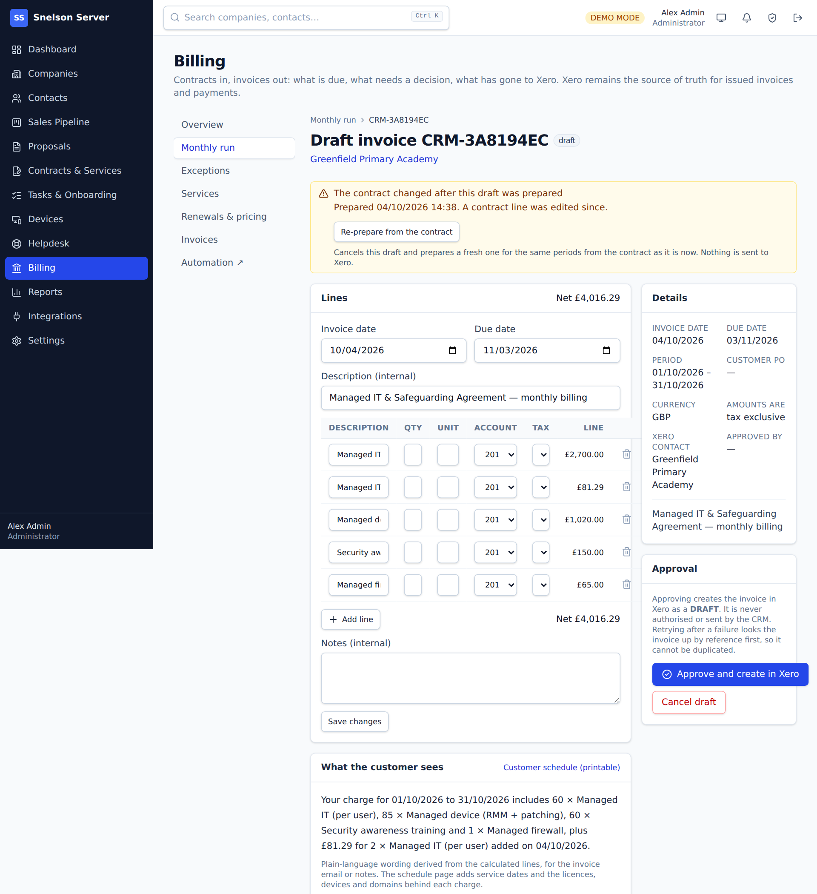
Click Customer schedule on a draft for a printable page to send with the Xero invoice: the explanation, the charges grouped by agreement with service dates, the supporting list of licences, devices and domains behind each charge, the PO reference and the agreement's renewal date. Use Print or save as PDF.
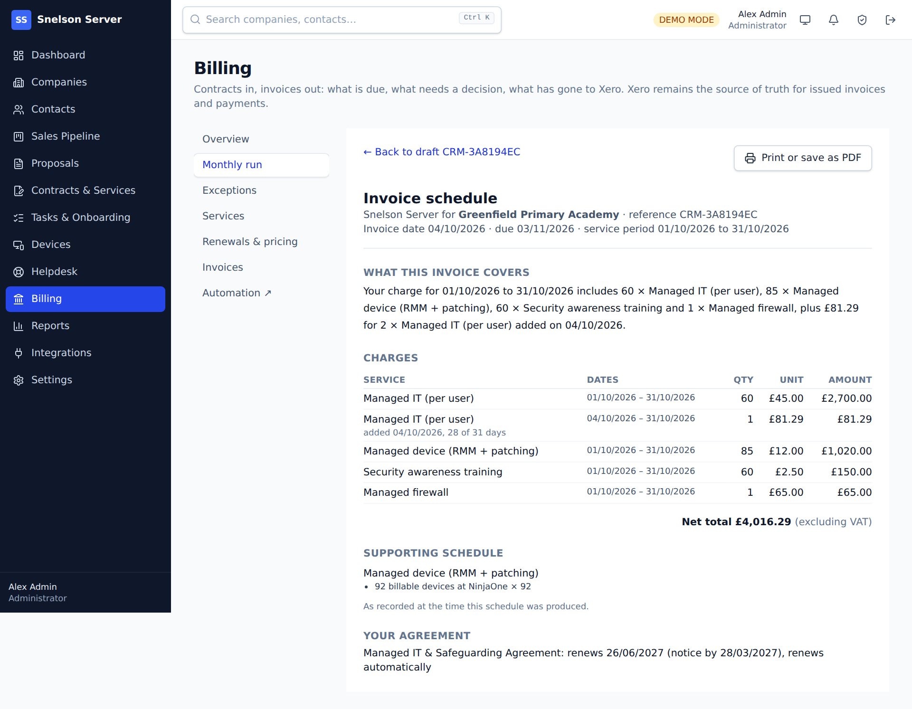
On a contract page, Prepare invoice opens a dialog with the period. The calculated lines, net and any already-drafted periods are shown before anything is created, so a partial period or a double-up is visible up front. A hand-typed period that is not an anchored one is pro-rated like any other partial period.
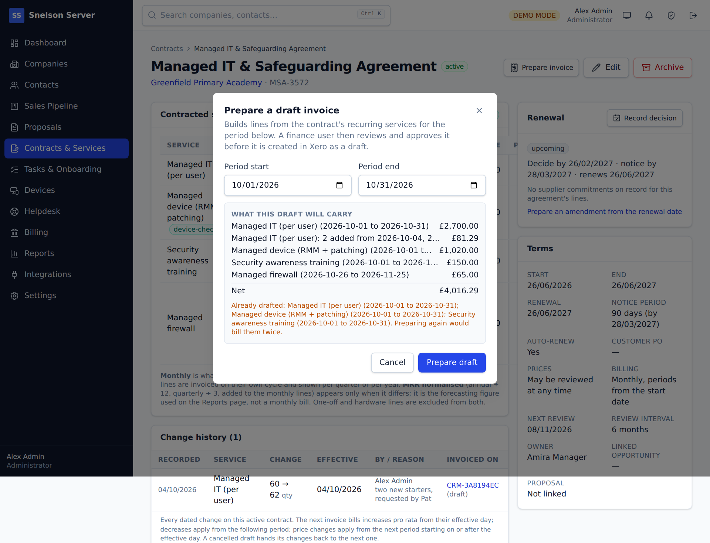
Every quantity or price change on an active contract is recorded as dated history: the value before and after, the effective day, who made it and why, and the draft that first accounted for it. The engine always calculates from this history, so several changes in one period are each charged for their own days.
| Change | What the next invoice does |
|---|---|
| Quantity up, inside the current period | The period is charged at the quantity on its first day, plus the extra units for their remaining days, pro rata. If the period was already invoiced, the difference is caught up on the next invoice. |
| Quantity down | Follows the line's reduction policy: from the next period, credited now, or at renewal. |
| Price change | Applies from the next anchored period starting on or after the effective day. Price changes are never pro-rated. |
| Backdated change | A change dated inside the previous period produces a traceable catch-up line: what that period should have cost, what was invoiced, the difference. |
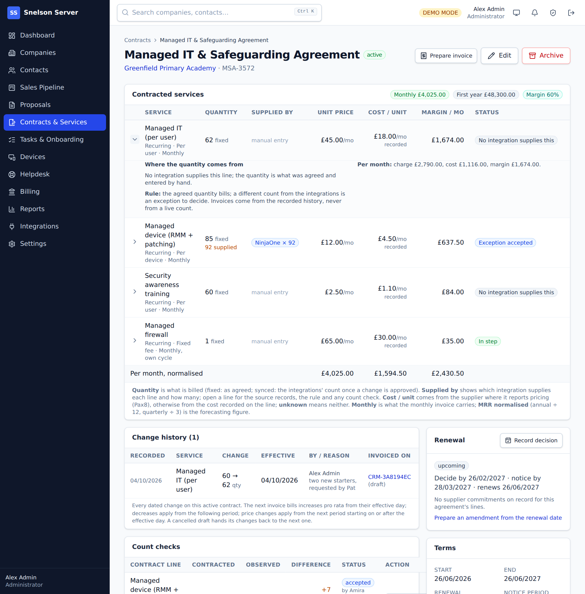
Billing → Needs attention is the one queue. Every check the system runs lands here with the same vocabulary, so you never have to visit several pages to find out whether anything is wrong. The chips filter by group; the customer picker narrows to one customer; clicking a label filters to that kind and shows what it means.
| Group | Kind | What to do |
|---|---|---|
| Matching | Provider account not matched to a customer | A Pax8 company, NinjaOne organisation or 20i item nobody has linked. Link it on the integration page; its services cannot be billed or costed until then. |
| Service not mapped to a charge | Possible missed revenue. Pick the line on the company's Billing tab, or record bundled, covered, free or internal. | |
| Possible duplicate service | The same supplier product appears twice for one customer. Check nothing is charged or supplied twice. | |
| Quantities | Supplied count differs from the agreement | A fixed line. Resolve: amend the line from a date, reduce at renewal, include in a bundle, accept as an exception with an owner and review date, or dismiss. The money consequence is shown first. |
| Quantity change to approve | A synced line. Approve to record the new quantity from the day it changed; the next invoice pro-rates it. | |
| Service covered by a line that cannot charge | The line's contract is not active or its quantity is 0. Fix the contract. | |
| Prices and costs | Supplier cost differs from the recorded cost | Pax8's price changed. Margin already uses the supplier figure; update the recorded cost on the line, and consider a price review. |
| Free arrangement past its review date | Decide again: extend the date or start charging. | |
| Data | Integration data is stale | The last successful sync is more than three hours old. Run a sync from the integration page. |
| Drafts | Customer not linked to Xero | Drafts can be prepared but not approved. Link on Integrations → Xero. |
| Draft rejected by Xero / differs from the previous invoice / waiting more than a week | Open the draft: fix and approve, review the reasons, re-prepare or cancel. | |
| Charge due but not drafted | Run the Monthly run, or set Bill from on the contract. Missed periods are red. | |
| Drafts the review finds unchanged are not in this list; they are one click on the Monthly run's Approve step. | ||
| Invoices | Invoice changed in Xero after approval / raised outside the CRM | Compare with the approved version on the draft; information for ad-hoc invoices. |
| Supplier bills | Supplier charge differs / without a customer | Pax8 invoice vs Xero bill, or a charge whose Pax8 company is not linked. See chapter 9. |
| Renewals | Renewal decision overdue / due | Record the customer's decision or prepare an amendment before the deadline. |
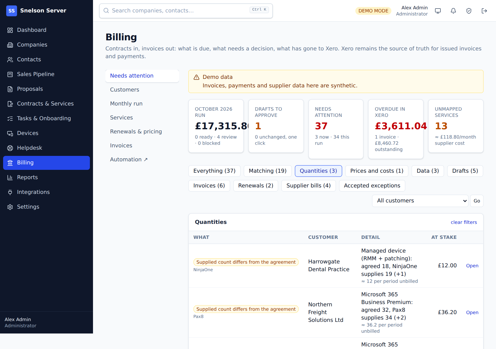
Every row opens the customer's Billing tab with the line expanded. The line shows the agreed and supplied counts and a Resolve… button with the options and the money consequence before anything happens:
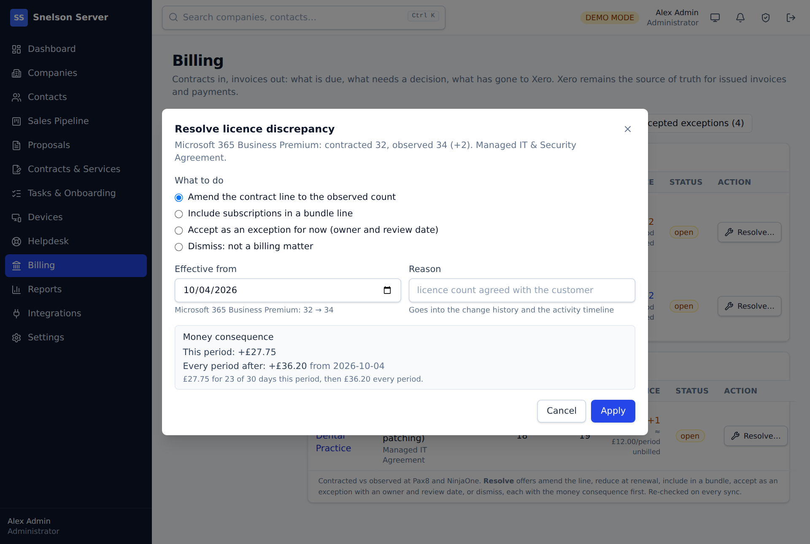
Billing → Services lists every service the integrations say a customer has: the integration, the supplier product (SKU, package type, device classes), the quantity and cost last synced, when it was synced, its state and the line that bills it, with how that link came about. Filter by state, integration or customer. Only unmapped may mean missed revenue; every other state is a recorded decision with a reason or a rule match.
| State | Meaning |
|---|---|
| Charged on a line | A contract line bills it. The register says how: chosen by a person, matched by catalogue SKU, matched by product name, or the per-device rule. |
| Included in a bundle | Another line pays for it; its quantity counts toward that line in the count check. |
| Covered by commitment | Part of a commitment already billed; counts toward nothing. |
| Intentionally free | Deliberately free, with a reason and a review date. Comes back to Needs attention when the date passes. |
| Internal / non-billable | Our own use; left out of counts. |
| Needs investigation | Parked with a reason until someone decides. |
| Unmapped | No decision and no rule match. Potential missed revenue. |
Cost is shown where the supplier prices the service (Pax8). 20i and NinjaOne carry no pricing, so their cost reads not reported, never zero; record a unit cost on the line if you know it, and the line's margin uses that.
Adding another integration later means one adapter that reports services in this shape; the register, the checks and every screen then work the same way for it.
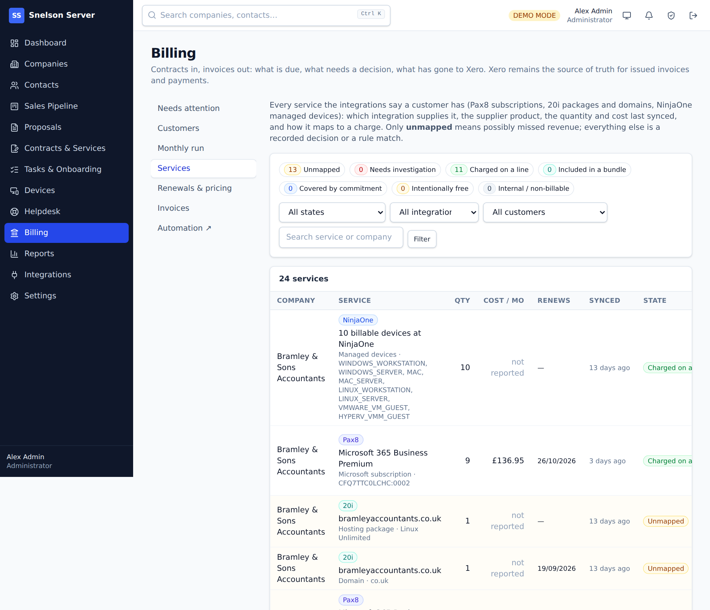
Billing → Renewals & pricing → Renewals queues every active contract with a renewal date by its decision deadline: a configurable lead (Settings → General → Renewal decision lead, 30 days by default) before the notice deadline. Each row sets the customer's renewal against the supplier commitments behind its lines, read from the register, and names the mismatches: "the agreement renews on 31 December but the supplier commitment runs to 30 September (≈ £300 for 2 months beyond it)" or "the supplier commitment renews before the agreement; the cost may change first".
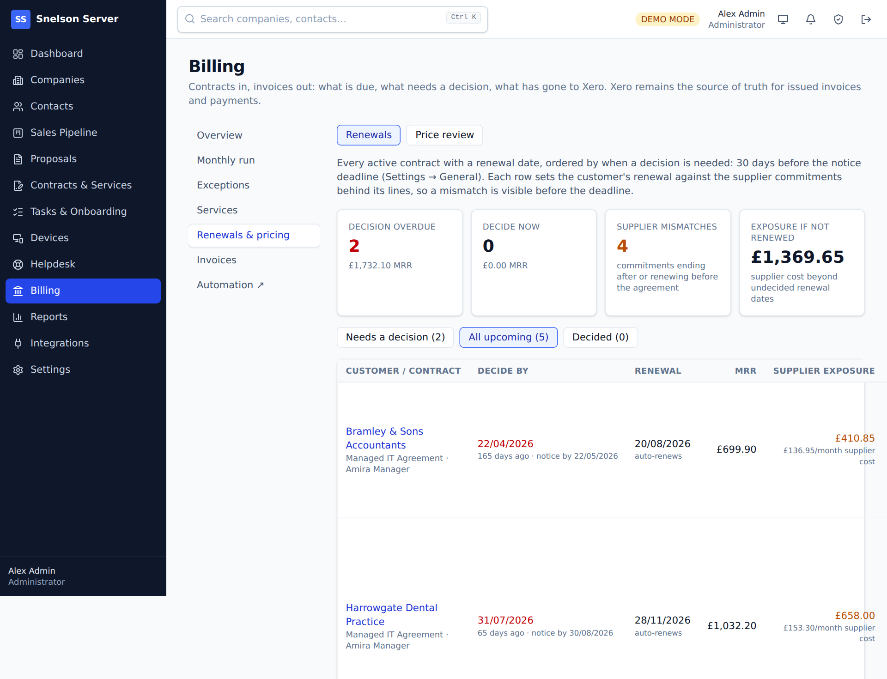
Billing → Renewals & pricing → Price review. Choose a scope (a catalogue product, or lines whose description contains a phrase), a change (percentage, new unit price, or a supplier cost passed through at the same margin), an effective date and a reason, then Preview. Every affected line is listed with price and cost now and after, margin now and after, the monthly change, the day it applies for that customer, the first invoice period that carries it, and the constraints (prices fixed until renewal, agreement ending first, customer not renewing, notice deadline near). Untick anything to leave out, then Apply. Each change is a dated, reasoned entry in the contract's history; no price changes silently.
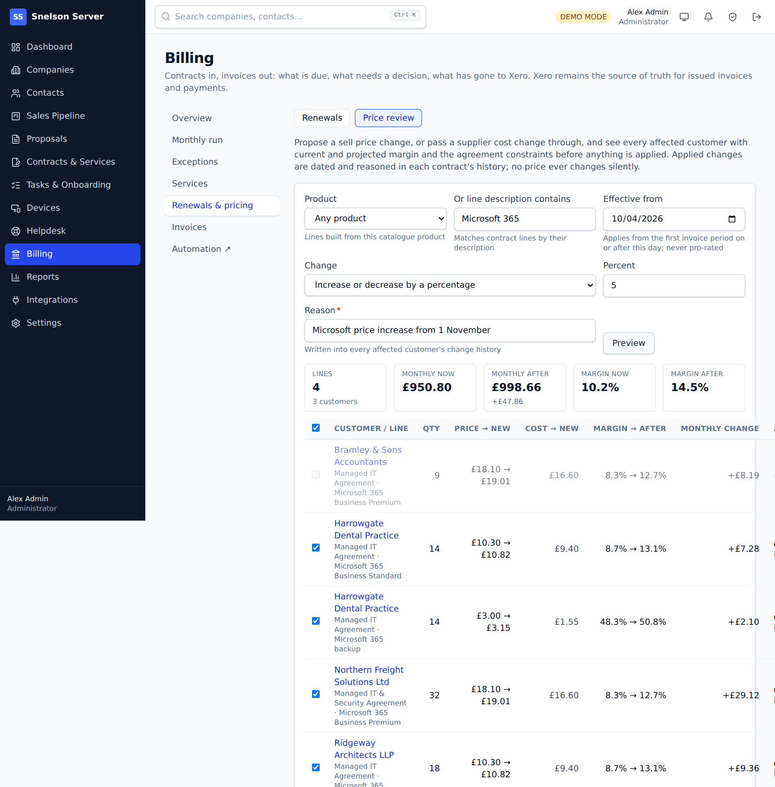
Billing → Invoices mirrors the Xero sales invoices: outstanding, overdue, paid in the last 30 days, drafts in Xero, and the list with status, dates, totals and balances. Figures are cached from the hourly sync and webhooks; Refresh from Xero pulls now. Live balances per customer are on the company page.
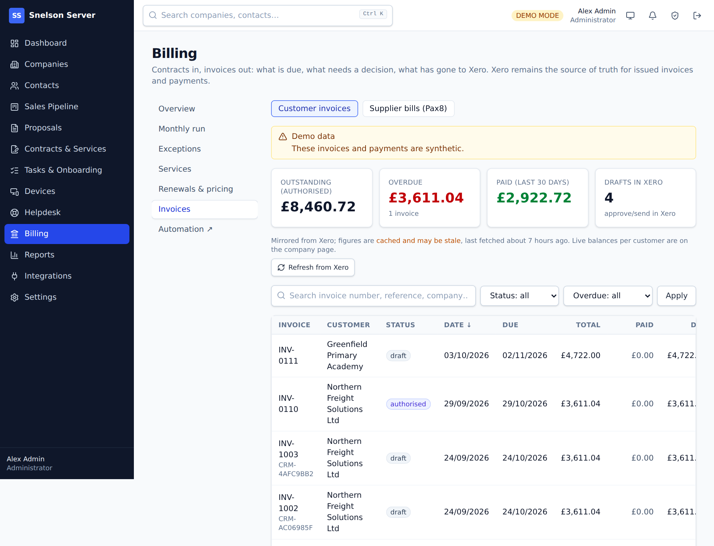
The Supplier bills tab compares the Pax8 partner invoices with the purchase bills entered in Xero for the Pax8 supplier contact. Matches are made by reference (strong) or by a unique identical total within ten days (weaker, amber); finance can match or unmatch by hand and a hand decision is kept. Each Pax8 invoice's charge lines are allocated to customers and subscriptions, so an equal total cannot hide a line-level difference. Import invoices from a date brings older history in. Nothing is changed in Xero or at Pax8.
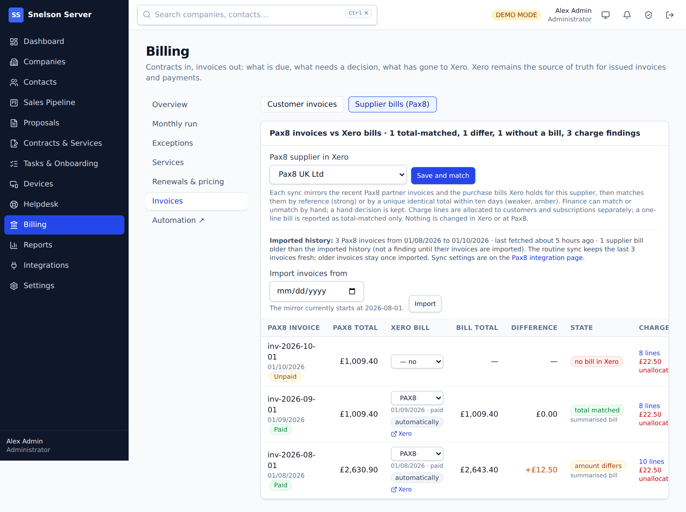
Settings → Billing automation holds a three-level policy. It only ever applies the same rules a person applies on the Monthly run and the draft review, and every run is audited naming the policy.
| Level | What runs by itself | What stays with people |
|---|---|---|
| 0 Detect only (default) | Findings, the workspace, the draft review and the renewal queue are kept current. | Everything else. |
| 1 Prepare ready drafts | On the run day each month, drafts are prepared for contracts rated ready. | Review and approval; every review or blocked contract. |
| 2 Prepare, then approve unchanged | As 1, then drafts the review finds unchanged are created in Xero as drafts. | Every exception; authorising and sending in Xero. |
The scheduled job runs daily at 07:00 and acts once a month on or after the run day. Run the policy now runs it by hand. The last run's summary is shown on the page.
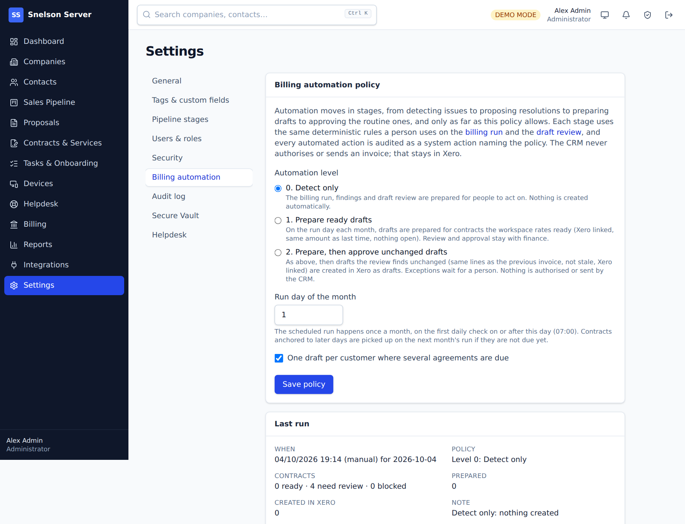
Every company page has one Billing tab. It answers, on one screen: what are we billing this customer, what does each service cost us, which integration or manual entry supplies it, does the billed quantity match the rule, what changed, and what will the next invoice be.
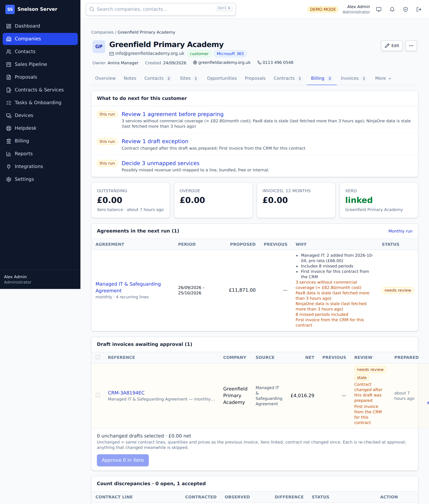
Billing → Customers is the same picture one row per customer: agreements and frequency, next invoice, charge, supplier cost (unknown where no supplier prices it), margin, how many lines the integrations supply and an attention count. Filter to customers needing attention, with an unknown cost, or supplied without an agreement. Click through to the customer's Billing tab.
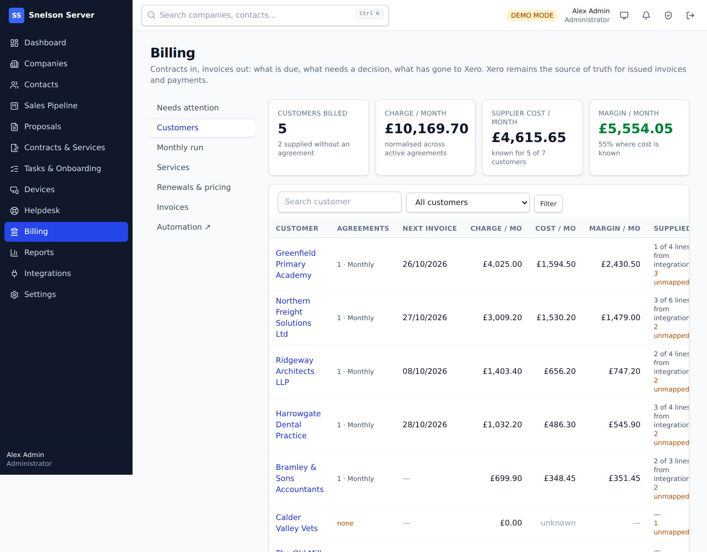
When a Better Proposals proposal is signed, the CRM normally drafts the contract itself from the opportunity's lines. If it did not (the proposal was built outside the CRM, or was linked later), the Proposals page shows Create contract on every signed proposal without one. With a linked opportunity the full acceptance runs; with only a company linked, a draft contract is created from the proposal's totals for you to replace with the agreed services before activating.
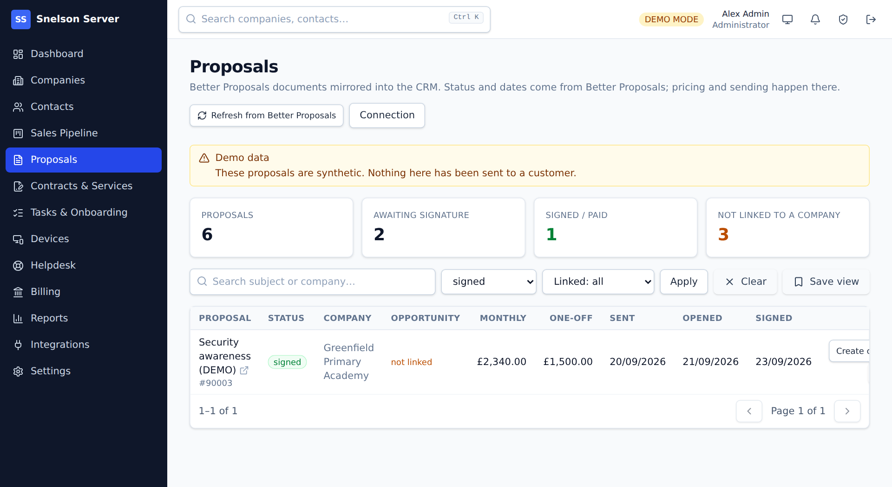
| Action | Who |
|---|---|
| See Billing, invoices, drafts | finance, admin (finance.read) |
| Prepare drafts, run the Monthly run, cancel or re-prepare drafts | finance, admin, account manager (invoice.prepare) |
| Approve drafts into Xero, match supplier bills | finance, admin (invoice.approve) |
| Edit contracts, record renewal decisions, apply price reviews, map services to lines, create a contract from a signed proposal | finance, admin, account manager (contract.write) |
| Resolve count discrepancies | finance, admin, account manager (discrepancy.review) |
| Automation policy, Xero and Pax8 settings | admin |
Preparing, editing, approving and cancelling drafts, the billing run, quantity and price changes, discrepancy actions, renewal decisions, price reviews, coverage decisions and every automated run are in Settings → Audit log with actor, entity and details. Customer-visible consequences are posted on the company timeline.
Old addresses (Finance, the billing run, findings, service coverage, renewals, price reviews) redirect into the Billing area, so bookmarks keep working.
A customer added two users on the 14th. What do I do? Edit the contract, change the quantity, set "Changes take effect from" to the 14th, save. The next run charges the two for their remaining days and the full quantity from the next period. The customer explanation will say so in plain words.
The licence check says agreed 14, Pax8 supplies 16. Open Needs attention (or the company's Billing tab), open the line, click Resolve, choose Amend the contract line from the day the licences were added, and apply. The item closes and the next invoice carries the change. If that line should always follow Pax8, set its quantity rule to synced: future differences arrive as a quantity change to approve.
Where does this charge come from? Company → Billing, open the line. Supplied by names the integration and the count; the opened line lists each source record with its supplier product, last sync and how it was matched, or says the quantity was entered by hand.
Why is the cost "unknown"? Only Pax8 reports prices. 20i and NinjaOne do not, so lines they supply use the cost recorded on the line, and read unknown until one is recorded. The CRM never invents a cost.
Pax8 changed a price. Needs attention shows "supplier cost differs from the recorded cost" for the line; margin already uses the new figure. Update the recorded cost on the line, then run a price review if the sell price should move.
A draft says "stale". The contract changed after it was prepared. Open it and click Re-prepare from the contract.
Two agreements for one customer are due. Can they go on one invoice? Yes: leave One draft per customer ticked in step 1. The draft groups the lines by agreement and covers both.
Why is a contract "blocked"? Its company has no Xero contact link. Link it on Integrations → Xero and run again.
A supplier commitment runs past the customer's renewal. It shows in Renewals as a mismatch with the months and cost at stake. Decide before the decision deadline; if the customer leaves, that cost stays payable.
Can the CRM send an invoice? No. It creates drafts in Xero; approving, sending and payments stay in Xero.
What does "potential missed revenue" mean? The partner cost of services nobody has mapped to a line. It is not confirmed billable until someone decides; confirmed gaps (expected charges not drafted, covered services that cannot charge) are listed separately.